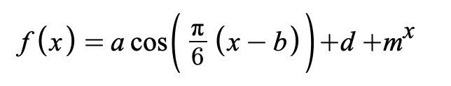

For millennia, humans have benefitted from the mild temperatures, plentiful oxygen, and clean water provided by our planet. Abundant food and shelter allowed us to create societies where we tend to our physiological needs and explore our intellectual capacities. However, the inhabitable environment we take for granted may be suffering—and we have nothing but our practices to blame for this shift.
The mid-18th century marked the beginning of the Industrial Revolution. No longer content to be part of Earth’s natural ecosystem, we learned how to make Earth’s precious resources work for us. During the Industrial Revolution, technological advancements allowed for more efficacious heating, and lighting, and transport, fueled by the energy released by combusting fossil fuels. Today, the fingerprints of the Industrial Revolution mark every facet of life in Seattle, from the bustling car traffic in the day to the luminated store signs at night. However, these developments have come at a tall price: increasing levels of carbon dioxide in the atmosphere are driving up the Earth’s temperature, creating dangerous and often fatal disruptions in the natural world. In this project, we explored how Earth’s changing climate is manifesting itself in Seattle’s monthly temperatures. By compiling data from the birth of the Industrial Revolution to the current day, we discovered an alarming omen of the natural disarray to come in the steadily climbing average temperatures in Seattle. We hope that this project will inspire you to consider the unignorable consequences of global climate change and the threat it poses to our community.
The National Weather Service collects monthly temperature data for major US cities. We sourced archival temperature data from 1950 to 2021 from the National Weather Service’s database.
Using the Desmos graphing calculator, we plotted Seattle’s average temperatures. This graphical representation allowed us to determine a best-fit line to reflect the seasonal changes as well as the larger warming trend.
Each year, natural warming and cooling trends occur due to the changing seasons in a sine wave oscillation. As each plotted point represents the average temperature data from a month, each oscillation has a period of 12 months. Dividing 2π by the period, we find a frequency of π/6. Desmos processed the observed data to determine the amplitude, vertical and horizontal dilations, and vertical and horizontal shifts of the equation using the data set. Our equation,  , has a R2 factor of 0.916, marking an excellent approximation of the data obtained from the National Weather Service. The increase in temperatures is accounted for by the mx1 portion of the equation. Leaving it out results in a lower R2 value, which tells us that, though there is seasonal fluctuation, there is an larger, more persistant trend of increasing temperatures.
The graphical data, both with and without the best fit line, is pictured here:
We also plotted the residual data, calculated by subtracting the predicted value from the observed value. The concentration of values around y=0 further increases confidence in the model, as small residual values reflect insignificant differences in the observed data and predicted values.
A warming climate poses an enormous threat to civil infrastructure, animal habitats, and natural ecosystems. Among the numerous consequences, we can expect these far-reaching repercussions for increased temperatures:
The consequences of rising temperatures are potentially catastrophic. Seattle is a port city, and its location on the Puget Sound makes it vulnerable to the floods and loss of vital marshlands resulting from rising sea levels. In the year 2100, the sea level is expected to have risen 28 inches. By 2150, the shoreline is expected to rise 47 inches.
Despite higher shorelines, conditions on land are becoming dangerously arid. A dry and hot climate increases the risk of uncontrolled wildfires, threatening to disrupt and destroy local ecosystems. As the city warms, winters produce more snow and rain on the Cascade Mountains, which in turn induces prolonged periods of rain and drought. Already, wildfires have devastated parts of eastern Washington. Though the effects have been milder on the west coast, dangerous weather conditions are rapidly expanding and will not remain isolated to the east for long.
Rising sea levels and increased wildfires have one thing in common. Temperature. Increased temperatures are no uncommon feat nowadays, but our graph has projected the average temperature in 2100 at 54.3 degrees Fahrenheit. and in July 64.5 F and in January is 44.0 F.
This is compared to the 2021 averages of: Jan: 43.8 and Jul: 68.0. Average for the year: 51.3 F
The project showed us the ability of math to model patterns present in the world. We were able to represent the temperature data using an equation fairly accurately. Not only can we see the overall trends more easily, we can also project the temperatures of the future. Our group did well with dividing up work and efficiently completing the project. Tali and Adrienne did a lot of the research and writing and Jairen wrote and designed most of the website. We all contributed to the math and graphing elements. I think if we were to do the project again, we might try to communicate a bit better and maybe template the website sooner so that we could all focus on the writing. Overall we liked the project and found the subject interesting.